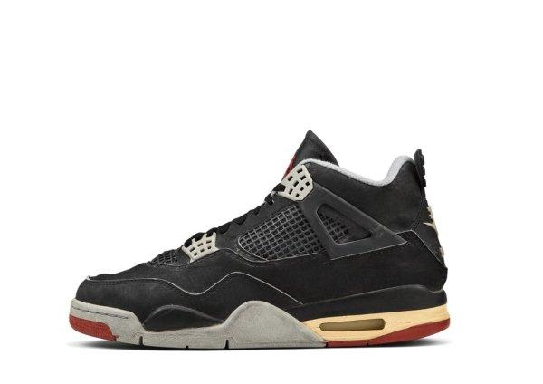

História do Air Jordan 4:
Lançado em 1989 e novamente criado por Tinker Hatfield, o Air Jordan 4 deu continuidade ao sucesso da linha com um design ainda mais técnico e arrojado. Ele foi o primeiro Jordan a ser lançado globalmente, o que ajudou a expandir a marca pelo mundo.
Entre as inovações, o AJ4 trouxe o sistema de amarras com suporte de plástico, painéis em mesh (tela) para melhor ventilação e uma estrutura mais leve, sem perder o estilo. O tênis também manteve o logotipo Jumpman, consolidando-o como símbolo da linha.
O modelo ficou ainda mais famoso graças à cena icônica do filme "Do the Right Thing", de Spike Lee, e pela campanha publicitária com o personagem Mars Blackmon, também interpretado por Lee. Michael Jordan também teve momentos lendários usando o AJ4, como o arremesso decisivo contra o Cleveland Cavaliers nos playoffs, conhecido como "The Shot".